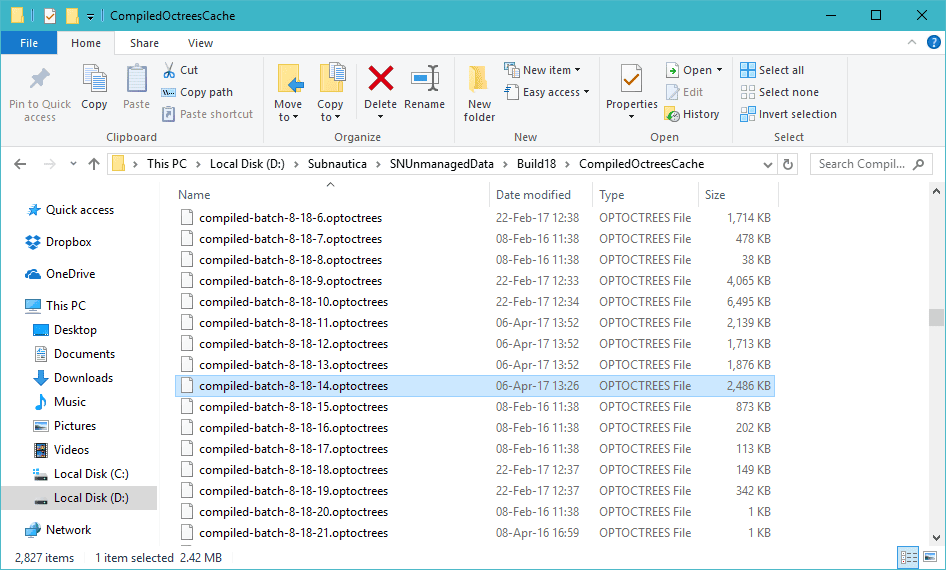

Archived copy of the original terrain data specification by Jonas Bötel at Unknown Worlds, published on at https://unknownworlds.com/en/news/terrain-data-format. Preserved here for accessibility.
Terrain data format
Modding
We are starting to see some really cool mods for Subnautica, which is impressive, because we did not create Subnautica with mod support in mind. We do not have the manpower to improve mod support, but we can save you some time reverse engineering our files. So here is how our terrain data works under the hood. Definitely ping me on Twitter or post on our forums, if you managed to build something cool with this information!
Terrain Data
Subnautica uses an isosurface polygonization algorithm called Dual Contouring to create terrain surface meshes from voxel data. The voxel data is stored in batches, each covering a cubic volume measuring 160 m on a side. Each batch is subdivided into 125 octrees, 5 in each dimension. Each octree covers a cubic volume of 32 m length. The voxel resolution is 1 m3. Each voxel contains information about its material type and its signed distance from the isosurface. Material types are sand, rock, and coral for example. The isosurface is found between neighboring voxels where the distance value changes sign.
World Batches
The world size is 4096 × 3200 × 4096 m3, horizontally centered around the origin. It covers the space between (-2048, -3040, -2048) and (2048, 160, 2048). The world is subdivided into batches. The naming pattern for batches is simply (x, y, z) starting from the minimum corner in the world. Therefore e.g. batch (12, 18, 12) covers the voxels from (-128, -160, -128) to (32, 0, 32). The batch files can be found in the Subnautica\SNUnmanagedData\Build18\CompiledOctreesCache\ folder. They are easily replaceable and therefore ideal for modding. For example replace compiled-batch-12-18-12.optoctrees with compiled-batch-9-9-12.optoctrees, start the game, and warp to (0, 10, 0) to find an entire area of the terrain replaced by solid a cube of rock.

Batch format
Batch
| Byte | 0 | 1 | 2 | 3 | … |
|---|---|---|---|---|---|
| Field | Version | Octrees | |||
| Type | int32 | Octree[] | |||
The binary data inside an optoctrees file starts with a four byte version field followed by an array of 125 octrees. The version field is a little endian encoded 32 bit integer. The current version is 4.
Octree
| Byte | 0 | 1 | … |
|---|---|---|---|
| Field | Node Count | Nodes | |
| Type | ushort | Node[] | |
Each octree starts with a two byte node count field followed by an array of the nodes. The node count field is a little endian encoded 16 bit unsigned integer. The minimum octree has one node.
Node
| Byte | 0 | 1 | 2 | 3 |
|---|---|---|---|---|
| Field | Material type | Signed distance | Child Index | |
| Type | byte | byte | ushort | |
Each node is exactly four bytes. One byte for the material type, one byte for the signed distance to the isosurface, two bytes for the little endian 16 bit unsigned integer array index of the first child node. If the child node index is zero, then the node is a leaf node. If the child node index is non-zero, then the eight nodes starting at that array index are its children. The eight children of an octree node subdivide its volume. The coordinates of the children of an octree node of size two are:
| Index | 0 | 1 | 2 | 3 | 4 | 5 | 6 | 7 |
|---|---|---|---|---|---|---|---|---|
| x | 0 | 0 | 0 | 0 | 1 | 1 | 1 | 1 |
| y | 0 | 0 | 1 | 1 | 0 | 0 | 1 | 1 |
| z | 0 | 1 | 0 | 1 | 0 | 1 | 0 | 1 |
The material type is simply an 8 bit unsigned integer index into an array of 254 materials. Material 0 represents the absence of matter, i.e. an empty voxel. Material 255 is reserved. Some useful materials are 37 for sand covered rock and 5 – 14 for corals. Note that depending on the quality settings only a limited number of materials can be rendered for each octree. If the nodes in an octree reference too many different materials, then the least frequent materials are dropped. The signed distance byte b is encoded using b = d × 126 + 126 where d ∈ [-1.0, 1.0] is the signed distance to the isosurface in meters. Solid voxels below the surface have positive distance, empty voxels above the surface have negative distance. Therefore voxels with byte values 1–125 are above surface, those with 127–252 are below surface. Byte value 0 is reserved to represent fully solid voxels, if the material type is non-zero.
Data
Let's look at some real data in hexadecimal form. In this case the optoctrees file starts with our four byte version field, followed by a fifteen single node octrees of material type 23. Each of these nodes represent 32 × 32 × 32 solid voxels. The 16th octree contains 2273 (0x08E1) nodes. The first node has material 23, signed distance 32 × 0.595 (C9), and its first child is located at index 1. The material for non-leaf nodes is the most frequent material of its children. The signed distance is the average of the distances of its children. Starting at index 1 are the eight child nodes. The first two are completely solid and have no children. Next are two nodes that have children, followed by another two solid, and another two with child nodes. At index 9 we find the first child of node 3. Etc. The positions of the octrees in a batch follow a z, y, x pattern:
| Octree | 0 | 1 | 2 | 3 | 4 | 5 | 6 | 7 | 8 | 9 | 10 | 11 | … | 124 |
|---|---|---|---|---|---|---|---|---|---|---|---|---|---|---|
| x | 0 | 0 | 0 | 0 | 0 | 0 | 0 | 0 | 0 | 0 | 0 | 0 | … | 128 |
| y | 0 | 0 | 0 | 0 | 0 | 32 | 32 | 32 | 32 | 32 | 64 | 64 | … | 128 |
| z | 0 | 32 | 64 | 96 | 128 | 0 | 32 | 64 | 96 | 128 | 0 | 32 | … | 128 |
Remarks
Please note that the data format is subject to change. We are at version 4 already. If the format changes, the version number will be incremented too. Also note that the file location may change. For now the optoctrees files are in raw binary format on disk. We might compress them, pack them, or convert them into Unity's asset bundles in the future.